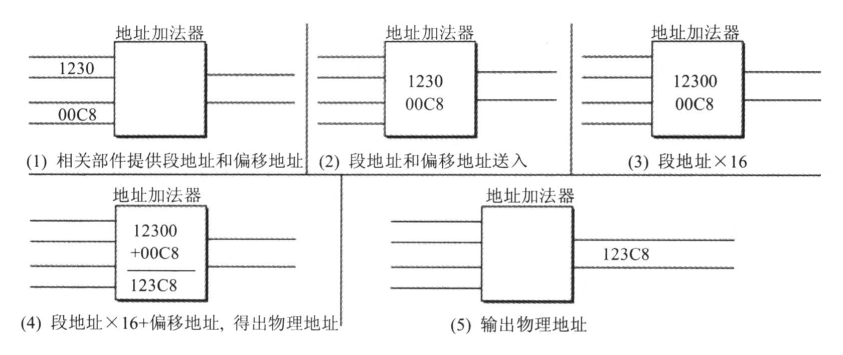

汇编语言
Table of Contents
1. 基础知识
- CPU(Central Processing Unit，中央处理单元)
- 寄存器，CPU中可以存储数据的器件
- 汇编语言的组成：
- 汇编指令：机器码的助记符，有对应的机器码
- 伪指令：没有对应的机器码，有编译器执行，计算机并不执行
- 其他符号：如+、-、*、/等，由编译器识别，没有对应的机器码
- 指令和数据， 指令和数据是应用上的概念。在内存或者磁盘上，指令和数据没有任何区别，都是二进制信息。
- 存储单元，存储器被划分为多个存储单元，每个存储单元可以存储1Byte，即8个bit位。
1.1. CPU对存储器的读写
CPU要从内存读取数据，首先要指定存储单元的地址。
CPU要想进行数据的读写，必须和外部器件（芯片）进行以下3类信息的交互：
- 存储单元的地址（地址信息）；
- 器件的选择，读或写的命令（控制信息）；
- 读或写的数据（数据信息）。
CPU和其他芯片通过总线连接，根据传送信息的不同，逻辑上划分为 地址总线、控制总线、数据总线。
CPU从3号单元读取数据的过程如下：
Figure 1: CPU从3号单元读取数据的过程
- CPU通过地址线发送地址信息“3”。
- CPU通过控制线发送内存读取命令，选中存储器芯片，并通知存储芯片，将要从中读取数据。
- 存储器将3号存储单元的数据 08 通过数据线传送给CPU。
1.2. 地址总线
CPU通过地址总线指定存储器单元。地址总线能够传送多少个不同信息，CPU就可以寻址多少个存储单元。
一个CPU有N根地址线，则可以说这个CPU的地址总线的宽度为N。这样CPU最多可以寻址2的N次方个内存单元。
假设一个具有10根地址线的CPU，向内存发出地址信息11时的地址线上传送的二进制信息如下：
1.3. 数据总线
数据总线的宽度决定了CPU和外界的数据数据传送速度。8根数据总线一次可以传送8位二进制数据（1字节）。16根数据总线一次可传送2字节。
8088CPU数据总线宽度为8，分两次传送89D8，第一次传送D8，第二次传送89：
8086CPU数据总线宽度为16，一次传送89D8：
1.4. 控制总线
CPU对外部器件的控制通过控制总线进行。控制总线是一些不同控制线的集合。有多少根控制总线，就意味着CPU提供了对外部器件的多少种控制。控制总线的宽度决定了CPU对外部器件的控制能力。
1.5. 各类存储器芯片
1.6. 内存地址空间
对于不同的存储器，CPU在操作时都将其作为内存来对待，将它们看作一个有若干存储单元组成的逻辑存储器，这个逻辑存储器就是我们所说的内存地址空间。
Figure 2: 将各类存储器看作一个逻辑存储器
最总运行程序的是CPU，我们用汇编语言编程的时候，必须要从CPU的角度考虑问题。对于CPU来讲，系统中的所有存储器中的存储单元都处于一个统一的逻辑存储器中，它的容量受CPU寻址能力的限制。这个逻辑存储器即是我们所说的内存地址空间。
2. 寄存器
CPU由运算器、控制器、寄存器等器件构成，这些器件通过CPU内部总线相连。
- 运算器进行信息处理；
- 寄存器进行信息存储；
- 控制器控制各种器件进行工作；
- 内部总线连接各种器件，在它们之间进行数据的传送。
不同的CPU，其寄存器个数、结构是不同的。8086CPU有14个寄存器，AX、BX、CX、DX、SI、DI、SP、BP、IP、CS、SS、DS、ES、PSW。
2.1. 通用寄存器
8086CPU的所有寄存器都是16位，可存放2字节。AX、BX、CX、DX用来存放一般数据，称为通用寄存器。
8086CPU的上一代CPU的寄存器是8位，为了兼容，AX BX CX DX都可以分为两个独立的8位寄存器使用：
- AX可以分为AH和AL；
- BX可以分为BH和BL；
- CX可以分为CH和CL；
- DX可以分为DH和DL；
2.2. 字在寄存器中的存储
8086CPU可以一次性处理两种尺寸的数据：
- 字节 记为byte
- 字 记为word，由两个字节组成
一个 字 存储在16位寄存器时，高位字节存储在寄存器高8位，低位字节存储在寄存器的低8位。
2.3. 汇编指令
| 汇编指令 | 控制CPU完成的操作 | 高级语言的语法描述 |
|---|---|---|
| mov ax,18 | 将18送入寄存器AX | AX=18 |
| mov ah,78 | 将78送入寄存器AH | AH=78 |
| add ax,8 | 将寄存器AX加8 | AX=AX+8 |
| mov ax,bx | 将BX中的数据送入AX | AX=BX |
| add ax,bx | 将AX和BX的值相加，结果存在AX | AX=AX+BX |
2.4. 8086CPU给出物理地址的方法
8086CPU是16位的CPU，能够一次处理、传输、暂存信息的最大长度为16位。
8086CPU有20位的地址总线，可以传送20位地址。 由于CPU是16位结构，如果简单的将地址从内部简单发出，则只能送出16位的地址，表现出来的寻址能力只有64KB。
8086CPU采用一种在内部用两个16位地址合成的方法来形成一个20位的物理地址。
8086CPU相关部件的逻辑结构：
Figure 3: 8086CPU相关部件的逻辑结构
8086CPU要读写内存时：
- CPU中的相关部件提供两个16位的地址，一个成为段地址，另一个成为偏移地址；
- 段地址和偏移地址通过内部总线送入一个成为地址加法器的部件；
- 地址加法器将两个16位地址合成为一个20位的物理地址；
- 地址加法器通过内部总线将20位物理地址送入输入输出控制电路；
- 输出输出控制电路将20位物理地址送上地址总线；
- 20位物理地址被地址总线传送到存储器。
地址加法器采用 物理地址=段地址x16+偏移地址 的方法用段地址和偏移地址合成物理地址。

Figure 4: 地址加法器的工作过程
2.5. ”段地址x16+偏移地址=物理地址“的本质含义
CPU在访问内存时，用一个基础地址（段地址x16，即左移4位）和一个相对与基础地址的偏移地址相加，给出内存单元的物理地址。
更一般的说，8086CPU的这种寻址功能是”基础地址+偏移地址=物理地址“寻址模式的一种具体实现方案。8086CPU中，段地址x16可以看作是基础地址。
2.6. 段的概念
段的划分来自于CPU，由于8086CPU用”基础地址（段地址x16）+偏移地址=物理地址“的方式给出内存单元的物理地址，使得我们可以用分段的方式来管理内存。
以下是一个分段示例，我们可以认为： 地址10000H～100FFH的内存单元组成一个段，基础地址：10000H， 段地址位1000H，大小为100H； 也可以认为地址10000H～1007FH和10080H～100FFH的内存单元组成两个段，其基础地址为 10000H和10080H，段地址为 1000H和1008H，大小都为80H。
Figure 5: 分段
注意：段地址x16必然是16的倍数，所以段的起始地址（基础地址）一定是16的倍数；偏移地址为16位，16位地址的寻址能力为64KB，所以一个段的长度最大为64KB。
2.7. 段寄存器
8086CPU有4个段寄存器：CS DS SS ES。
2.8. CS和IP
CS和IP是8086CPU中两个最关键的寄存器，指示了CPU当前要读取指令的地址。CS是代码段寄存器，IP为指令指针寄存器。
8086机中，任意时刻，CPU将 CS:IP 指向的内容当作指令来执行。
Figure 6: 8086PC读取和执行指令的相关部件
在8086CPU加电启动或复位后，CS和IP被设置为 CS=FFFFH IP=0000H ，即8086PC机刚启动时，CPU从内存FFFF0H处读取指令执行，FFFF0H单元中的指令是8086PC机开机后执行的第一条指令。
2.9. 修改CS、IP的指令
jmp指令可以修改CS、IP寄存器的值。
” jmp 段地址:偏移地址 “的指令可以修改CS和IP寄存器的内容，其中用段地址修改CS，偏移地址修改IP。
” jmp 某一合法寄存器 “指令的功能：用寄存器的值修改IP寄存器。
2.10. 代码段
对于8086PC机，编程时可以根据需要将一组内存单元定义为一个段。段长度为N（N<=64KB），存在一组地址连续、起始地址为16的倍数的内存单元中。
8086CPU工作过程：
- 从CS:IP指向的内存单元读取指令，读取的指令进入指令缓冲器；
- IP指向下一条指令；
- 执行指令。
3. DEBUG程序的使用
debug是DOS、windows都提供的是模式（8086）程序的调试工具。使用debug可以查看CPU各种寄存器的内容、内存情况和在机器码级跟踪程序的运行。
Debug常用命令：
- R 查看、改变CPU寄存器的内容
r 寄存器- D 查看内存中的内容
d 段地址:偏移地址d 段地址：偏移地址 偏移地址- E 改写内存中的内容
e 段地址:偏移地址 数据 数据 数据 ......,或者e 段地址:偏移地址回车后输入 数据， 空格下一個数据，Enter结束输入- U 将内存中的机器指令翻译成汇编指令
u 段地址:偏移地址- T 执行一条机器指令，执行CS:IP指向的指令
t- A 以汇编指令的格式在内存中写入一条机器指令
a 段地址:偏移地址- (no term)
- P
4. 寄存器
4.1. 内存中字的存储
CPU中用16位寄存器存储一个字，高8位存放高位字节，低8位存放低位字节。
内存出存储时，字的低位字节放在低地址单元，字的高位字节放在高地址单元。
4.2. DS和[address]
mov bx,1000H mov ds,bx mov al,[0]
"[…]"表示一个内存单元，默认使用DS寄存器作为段地址。
8086CPU不支持将数据直接送入段寄存器的操作 。
4.3. 字的传送
4.4. mov、add、sub指令
mov指令形式：
- mov 寄存器，数据
- mov 寄存器，寄存器
- mov 寄存器，内存单元
- mov 内存单元，寄存器
- mov 段寄存器，寄存器
- mov 寄存器，段寄存器
- mov 内存单元，段寄存器
- mov 段寄存器，内存单元
add指令形式：
- add 寄存器，数据
- add 寄存器，寄存器
- add 寄存器，内存单元
- add 内存单元，寄存器
sub指令形式：
- sub 寄存器，数据
- sub 寄存器，寄存器
- sub 寄存器，内存单元
- sub 内存单元，寄存器
4.5. 数据段
ds寄存器存放数据段的段地址。
4.6. CPU提供的栈机制
8086CPU提供入栈和出栈指令，最基本的两个是 push和pop 。 例如 push ax 表示将ax寄存器入栈，pop ax 表示从栈顶取出数据存入ax。 8086CPU的入栈和出栈都是以 字 为单位进行的。
8086CPU的栈操作：
Figure 7: 8086CPU的栈操作
段寄存器SS 和寄存器SP ， 任意时刻，SS:SP指向栈顶元素 。
push ax 的执行步骤：
- SP=SP-2, SS:SP指向当前栈顶前面的单元，以当前栈顶前面的单元为新的栈顶；
- 将ax中的内容送入SS:SP指向的内存单元处，SS:SP此时指向的新栈顶。
4.7. 栈顶越界的问题
8086CPU中需要注意栈顶越界的问题；执行出栈操作时也要注意，防止栈空的时候继续出栈而导致的超界。
4.8. push、pop指令
push和pop指令形式：
- push 寄存器
- pop 寄存器
- push 段寄存器
- pop 段寄存器
- push 内存单元
- pop 内存单元
push和pop指令与mov指令不同，CPU执行mov指令只需要一步操作，就是传送，push、pop需要两步操作。
- 执行push时，先改变sp（sp=sp-2），后向ss:sp处传送。
- 执行pop时，先读取ss:sp处的数据，后改变sp（sp=sp+2）。
4.9. 栈段
如果将 10000H～1FFFFH 这段空间当作栈段，初始状态栈是空的，此时SS=1000H，SP=0。（SP指向栈顶的下一个单元）。
CPU将某段内存当作代码，是由于CS:IP的指向；CPU将某段内存当作栈，是由于SS:SP的指向。。。一段内存既可以是代码的存储空间，也可以是数据的存储空间，还可以是栈空间，也可以什么也不是，关键在于CPU中寄存器的设置，即：CS、IP、SS、SP、DS的指向。